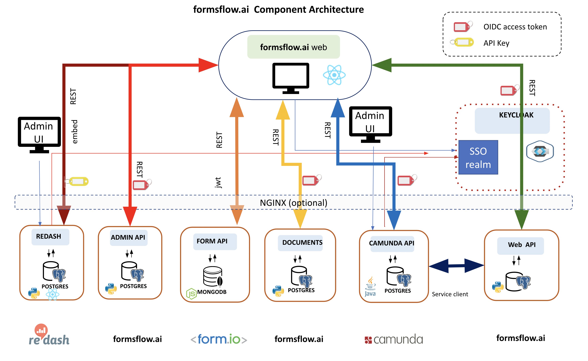

System Architecture

Components
The components of the system are:
formsflow UI
Browser-based React integration web UI Most of the day-to-day end-user and review tasks are performed from this application, built specifically to act as a common UI combining forms, workflow, and analytics functionality. The web application is written as a progressive app with the potential for offline data-entry. formsflow UI accesses the individual system component data through native API's using OIDC or SAML access tokens.
formsflow UI Extension for Vue.js (optional)
There is a Vue.js based web user interface for easy integration of formsflow.ai to your existing User Interface. This extension provides components for easily using Forms, Tasklist by installing as a npm package. To know more details checkout formsflow-ai-extension repositoryand to install package go here.
Keycloak Identity management server
The system uses an existing (your) Keycloak server which provides a common identity management capability. The system provides default installation and provisioning of the Keycloak server for local setup, steps are mentioned here. However, you can setup your own Keycloak server and follow the provisioning steps here.
Form.io API
The REST interface to the form.io core
Camunda Admin UI
The native admin interface to Camunda (bundled and unchanged) . Use this to define workflows and to manage workflow tasks as an admin.
Nginx Web server (optional)
Webserver providing reverse-proxy redirection and SSL to components for remote deployments. ( bundled and configured )
Redash Admin UI
The native admin interface to Redash (bundled and unchanged). Use this to build analytics dashboards.
Redash API
The REST interface to the Redash core. Bundled and unchanged
REST API
Python REST API providing business logic around the internal formsflow.ai Postgres database. This API is used extensively by the formsflow.ai UI to synchronize, maintain state, extend functionality, and integrate between components.